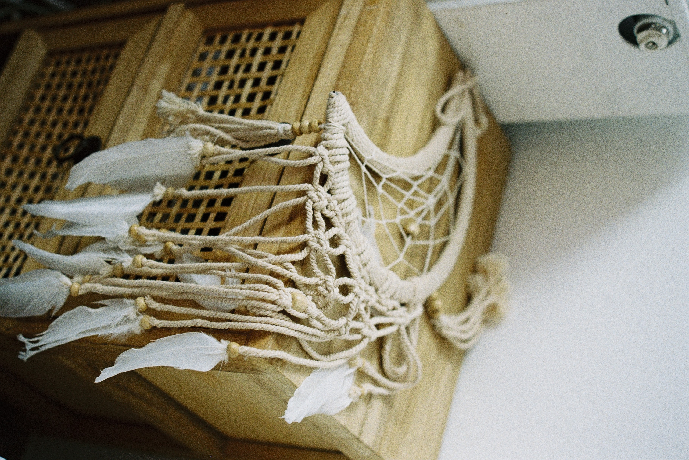
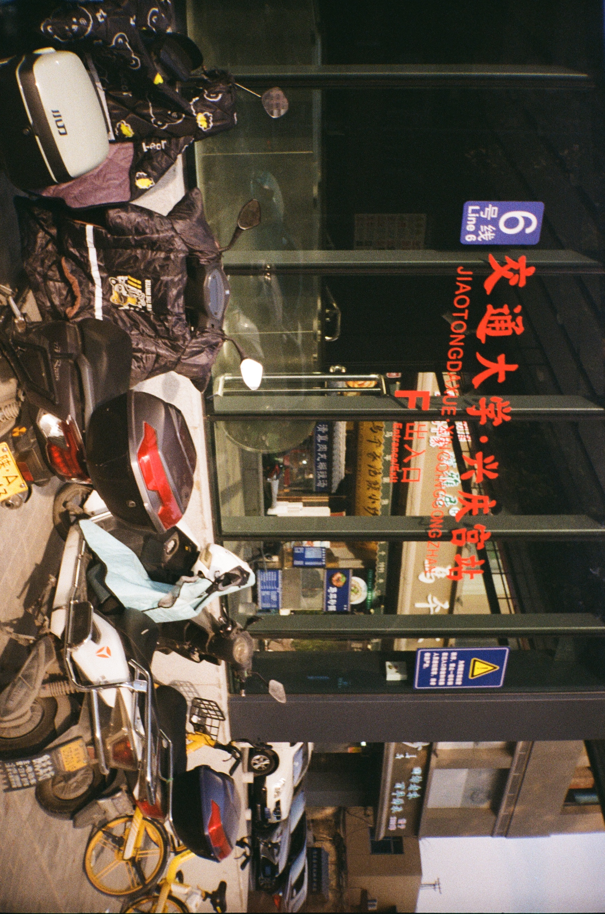

我搬过好多好多好多次家，住在过好些城市过，不只是这两年，是从我出生开始。我不知道家到底应该怎么定义，不同人一定有不同的定义，但在我的心里，家这个概念从来都跟固定住所没关系。
我没有任何3岁以前的记忆，但从照片来看我跟着当时需要到处游荡的父母住过深圳，珠海，石家庄，每个城市里又搬过不同的街区，中间不断穿插着逢年过节回西安老家短住，当时“家”很简单，不论住在在哪个城市的哪个出租屋，只要我还在我爸妈身边我就会觉得在家，我完全不记得这些城市的样子。
后来到了上幼儿园的年纪，“家”在我父母的决定下被安在了北京，那时的北京只有三环大，四环这个概念都还不怎么存在，路还没怎么修，“四环”基本上是郊区的别名，四环再往外就不叫北京了，这是那个城市存在在我记忆里的样子，所以我很难对着现在的北京说这是我家。但我记得当时家附近的的玉渊潭公园夏天会有荷花盛开，每年秋天我们都会去好多次香山看枫叶，幼儿园的秋游和春游总跟天安门广场有关，周末记忆是开车去秦皇岛海边玩沙子和海水，在路上我总可以拥有整个后座躺着睡觉。如果说20年前的北京跟现在有任何相似之处，那就是这座城市永远都欢迎外面来的人，也一直在送走想走的人，加之我读的是国际学校，我当时的朋友们现在散落在世界各地，我与他们绝大多数都已经失去了联系，唯一保有联系的是我当时最好的朋友，她现在在苏州老家当警察，上次见面已经是6年前了。长大的环境对人的影响很神奇，如果你在任何关于南北方食物偏好的问题里问起她，一口流利苏州话和软软的普通话口音的她一定听起来像个北方人，她最喜欢吃的食物是炸酱面，跟我一样，我们也都知道这是因为我们幼儿园的炸酱面做的实在是太好吃了。
住在北京的时候回西安我们总是坐同一趟卧铺火车，因为妈妈觉得睡一觉就到站最舒服，我直到现在也这样觉得，我还记得这趟车的细节，Z20每晚8点左右从北京西出发，大约在早上8点到达西安站，是那个城墙下的火车站，因为当时西安还没建北站，Z编号代表这趟车是直达，这就是我对中国铁路系统全部的了解了；或许我的父母从来都不是自愿游荡的，也或许他们在某一时刻累到只想回到他们的家，所以我们在北京度过了7年后彻底举家搬回西安，之所以说是“彻底”是因为西安于我来说一直像一个远方的家，我们很经常地回老家，这是我们这个“小家庭”所属于的“大家庭”所在的地方。西安是一个熟悉又陌生的概念，我听到陕西话会觉得亲切，可不论是当时还是现在，朋友还是陌生人，我总能听到有人告诉我，你听起来不像西安人，试图跟卖水果的姨说陕西话时也总会被揭穿“女子你是外地来的吧，在西安多久了？西安话学的还行么”。可我确确实实在这里读了一半的小学，初中，参加了中考，又读了一年半高中。我看着西安城里的大辫子公交被新能源公交取代；东郊的冰箱厂纺织厂们被拆，取而代之的是一个个购物中心；上学的7年里我大概在228这趟公交线路上支付了几千块钱，因为它方便地直达我的小学和初中。可或许是西安城的慵懒在我生命里出现的太早了，我还不太能享受这片古都给人带来的稳定和舒适的感受，于是8年后我选择把自己拎出来，独自一人搬去了新加坡上学。
去新加坡的决定发生的正如我这两段的转折一样，没有铺垫，没有预料，没有计划，是很突然发生的事情，但又像是命中注定一样。我还记得当时是一个中午，我正在西工大食堂排队买饭，收到妈妈发来的消息，她告诉我或许存在这么一个机会，可以去新加坡，但不知道报名方法，她也不确定我的学校有名额，但如果我想的话可以去打听打听。任何被我听说的东西，去不去要不要的可以再议，打听打听总没错，这是我的人生信条之一，于是当天下午我在行政楼里敲了一些门，最后坐在校长办公室里听到校长说，“我知道你的意愿了，你回去等通知吧“。等待有时候也是一个必要的过程，于是我回去正常的上学放学写作业考试，忘了是几个月之后了，我收到了报名表，那之后又经过了长达半年三轮的笔试面试，最终我抵达了我当时想要的。大概是因为第一次自己出国生活，当时“家”这个概念于我来说无疑就等于了西安，因为那是我家人所在的地方，像是by default设置一样，“回家”变得不假思索，我像一个风筝，不论飞在哪里，线轮被牢牢锁在了西安。
再后来我又倦了，这绝对是我的毛病，朋友说我有commitment issue，我非常认同。我不仅对这座城市，人，生活，甚至是学习和未来可能的工作都感到厌倦，我只想离开，去哪里都可以，可能回来也可能不回来。于是我就走了，目标瞄准到我当时心目中最遥远的地方：北欧三国申请了交换学习项目，但在种种机缘巧合下我落到了慕尼黑，在那里度过了9个月的实习和学习，喝了好多啤酒，交了好多朋友，看了好多次日落，留下也带走了一些无始无终的爱…..我有好多篇文章关于可爱的这里，如果用一句话概括的话我会说，无论当时发生的巧合是什么，我感谢宇宙让我降落在慕尼黑机场。
后来我陆续在泰国，土耳其，埃及，波黑短暂的住过半个月到半年不等，全部行李就是一个46升的大包，在匆忙赶路却切实感受着它在我肩上的重量时我总会提醒自己，那就是我的全世界，自然不会轻。这期间有时每天入睡的地方都不同，有时碰到心仪的地方我会租一两周住下来，在某一时刻我好像开始追求起了稳定，我开始向往于有一个自己的固定住所，哪怕是在异国租期只有几个月的房子，但我痴迷于能够管一个地方叫“家”的稳定感，尽管这种稳定的感觉其实并不可靠，一些人在这时走进我生命里，带着他们稳定和完整的生活状态，我误以为或者说我下意识的骗自己，靠近他们我便也可以获得同样的生活，所以不自觉地被吸引，后来经过无数个想不明白的时刻我最终意识到，寻找和迷茫的状态最好是自己度过，因为没有任何人有能力，也不该伸出援手。可在这个过程中我遇到了一群愿意什么也不说，就陪在我周围听我说话的人，他们会接起我崩溃时的电话，跟我说你要不飞来找我吧我们去吃好吃的；会给我唱自己写的歌直到我听到好笑的歌词笑出声；会坐着火车拎着菜和喝的来我家，翻翻捣捣摆一桌火锅出来跟我一起吃；会隔着时差带我看她新装修的房子，然后说随时欢迎你来住………我感激这样的相遇。
现在我想我不需要一个固定的住所才可以宣称我有家了，小时候家就是是家人在的地方，可家人会有自己的生活，我也会有自己的生活，但我永远是我自己的家人，所以我在哪里，哪里就是我的家，尽管我家目前只有我一个人，但我的肉体和我的灵魂过的都还好。所以你好新加坡，尽管我并不喜欢这寸土地，但你现在是我家。我回家了。
7.14 写于曼谷飞往新加坡的飞机上


All photos are by film